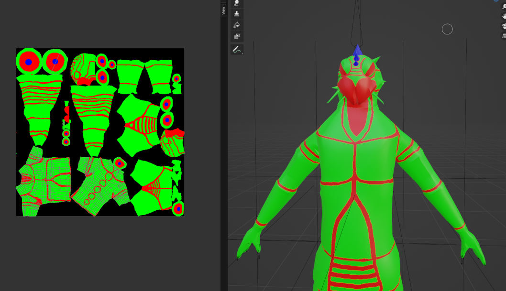
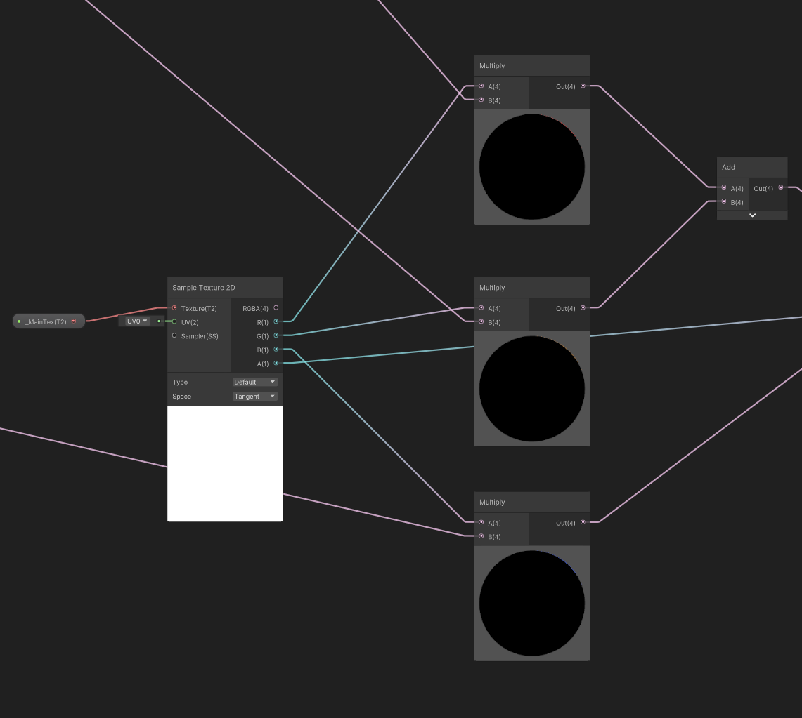
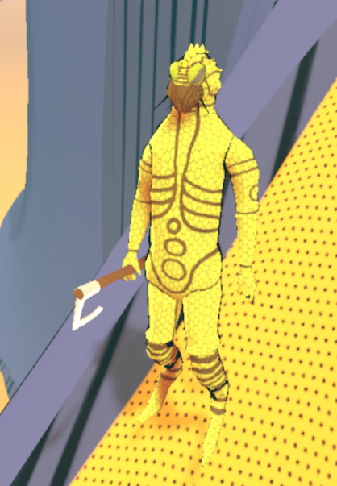
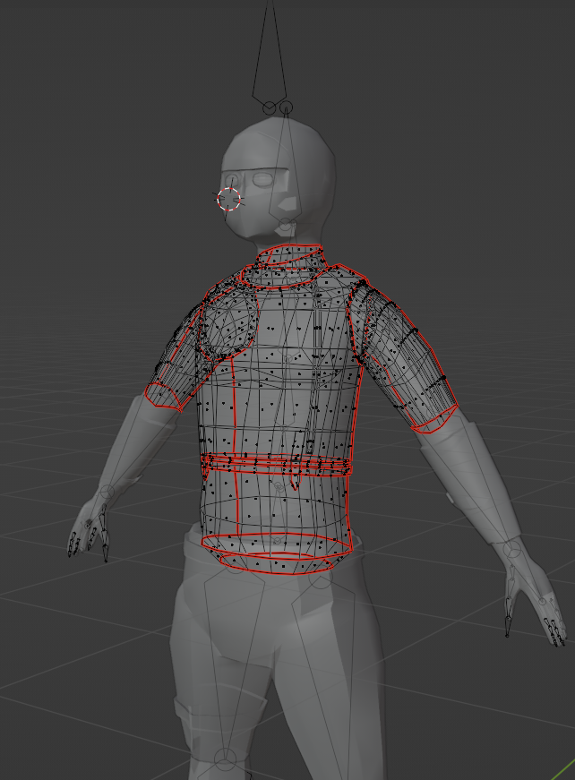
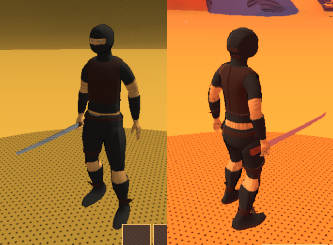
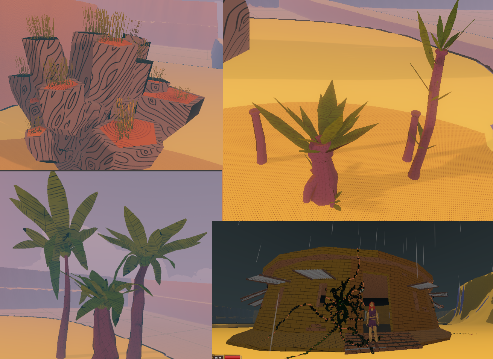
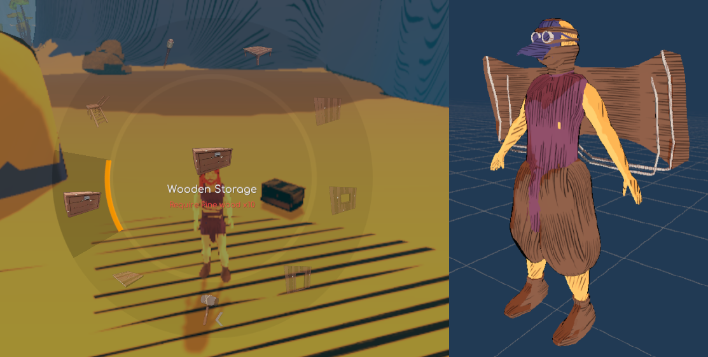

Gamedev log 3# - Revamped materials, models and more!
What took yoo so long again?
Hi. I didnt hold up my promise and post more often. The truth is there was not much to post… Not because i would not work on the game every day since the last post, but because i had to re-do a lot of things and didnt want to share half-made products. Anyway… lets get on to it. Today i will over flow you with updates.
Remade shaders
When a creator works deeply on some project it often happens that he becomes slightly blinded by the vision and doesnt see the mistakes. So when i shared my visuals to the friends i was stuttered that they didnt like it so much as i did. After some free-time and analyzing the data i started realizing that i need to spice things up. So i have remade my shaders from the ground up. Now we are using sofisticated RGB masking shader with similar visuals as before, but now we can add more properties and masks let us cut some performance as before we would use 3 shaders instead of one like now. Here i can share with you some information about how i have achieved the masking on my character model.

On this picture you can see three color channels masking the space where the final shader will apply the predefined colors. In the unity we can simply use texture sample node and mask it outputs trough multiply node with the predefined color/texture/properties. I would share the whole shader, but its too complex and wouldnt work anyway since i use some code changes. So here is the basic principle. Hope it helps.

An here is the final image of the reptilian-bug race. Doesnt have a name yet. Feel free to contact me via discord and gimme a hint. I will consider all options :)

Remade models
As you probably guessed already i have had to remake my models of characters (and most of the things in the world) because the new shader doesnt only optimizes the game because you dont have to use multiple materials. Which is btw crucial cuz what i have learned each material is casting shadows and receiving lighting in the game. That means if you have 3 materials on your character it will need to count everything 3x times!
The similar problem is also with skinned meshes. I didnt know this but each skinned mesh in your character has its own animator in Unity… So if you character consists of 10 skinned meshes you are fucked. This is specially bad in games with mass population of NPCs. Thank you Aleš Harry Herink for the tip! Saved my game probably :) (Harry is my dear friend who decided to dont give a fuck about people and society and just bought a tent and small piece of land and started developing games in the middle of forests. Also in winter! Please go to his twitch via the link on his name here and follow his game dev journey also! Thank you.)
This is not all sadly. After few attempts i have also realised that my models suck. Not only they look like first grader’s work, but they also werent that much optimized. I used to have like 30k verticies per piece of character (a hand for example). That would count as much as 150/200k verticies per character which is kinda unmanagable in the open world game. I had to cut it down and once again Harry came and saved the day. On his stream i quickly catched up some Blender lessons and started doing manual remeshing with shrink wrap. That is not a quick work but its definitely most efficient. I have tried to use things like automatic remeshers (instant meshes and stuff). But those dont compare at all to the manual work that i have ended up using. When doing this i have also tried to care more about UV wrapping, because of the future proof changes for the RGB masking. Here you can see some examples of the remeshed models with proper UV wrapping and 7000 verticies in total (full body).

On this image you can also see ± how i cut the body on the individual parts.
Body Culling
Individual parts of body are another super usefull thing to do in the preparation of the model because i hated that my equipment didnt hide the body properly in the last update. Now the equipment lines up with the body parts size dimensions. Because of that i can easily hide each part when its covered with an item. You can see that here. 
New nature models (but: to be remodeled + optimized)
Here are some more creative updates. I am not sure about the names. Currently we have got more that 10 kinds of trees. I will not share all of them, because i am not sure which i will keep in the game. And i have to remesh them. On the last picture you can also see an architecture protype. Its inspired by Kenshi building. But i also might remake it in the future, because i have finnaly connected the building system :)

Building and flying?
Ok the best at the end? Not sure about this one but i am sure players will love to hear, that i have connected building system asset to my game which will lets us freely build and save player houses, also with crafting stations, chests and other interactive items. On the following picture you can see radial menu which will be remade and some premade assets to be also remade. You can also see the flying suit which can be used with all nomadic characters. Its super fun to use while developing the game, but its also hella lot buggy and i am not sure if its worth to keep. What i am sure about are vehicles/mounts. But i might remove flying just because its messing up with several systems that i have planned out like world end- masking. Which would be impossible to hide when flying. And that would really break any immersion. I wanted to use the suit to just glide, but sadly that seems to be impossible with my current set of skills. So maybe in future :)

Thats it.
Ok… that was exhausting and probably full of mistakes… sorry its 1 am and i dont care. Follow me on my socials to get more information about the game development. Thank you.